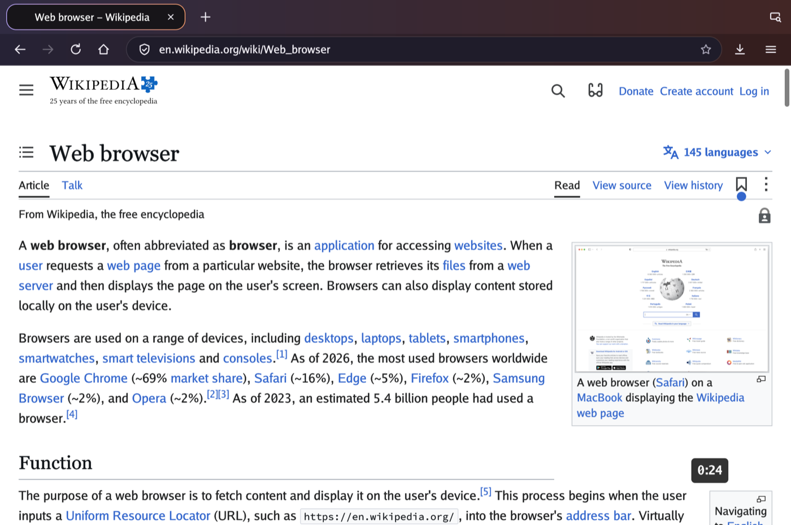
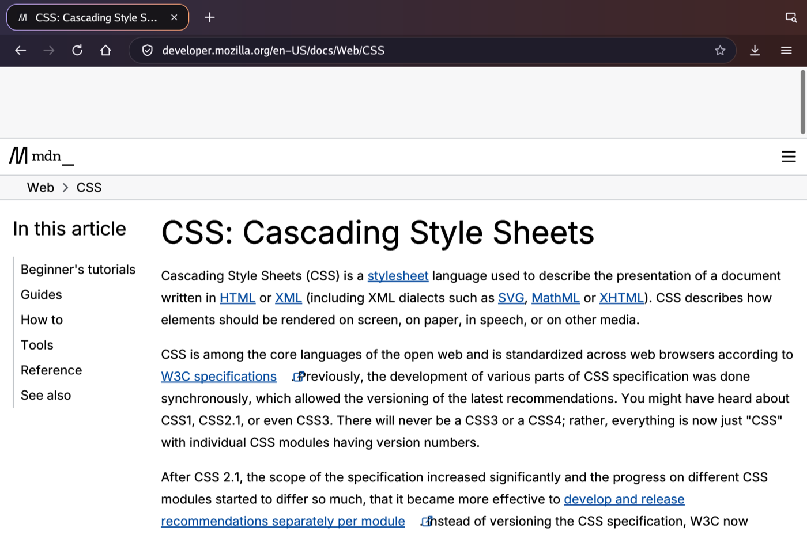
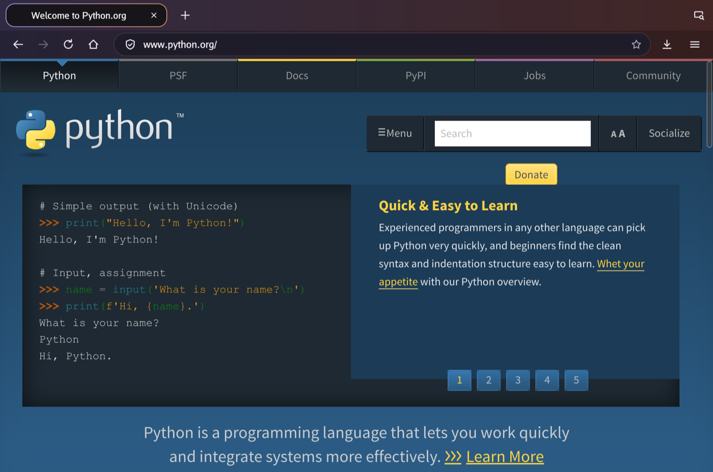
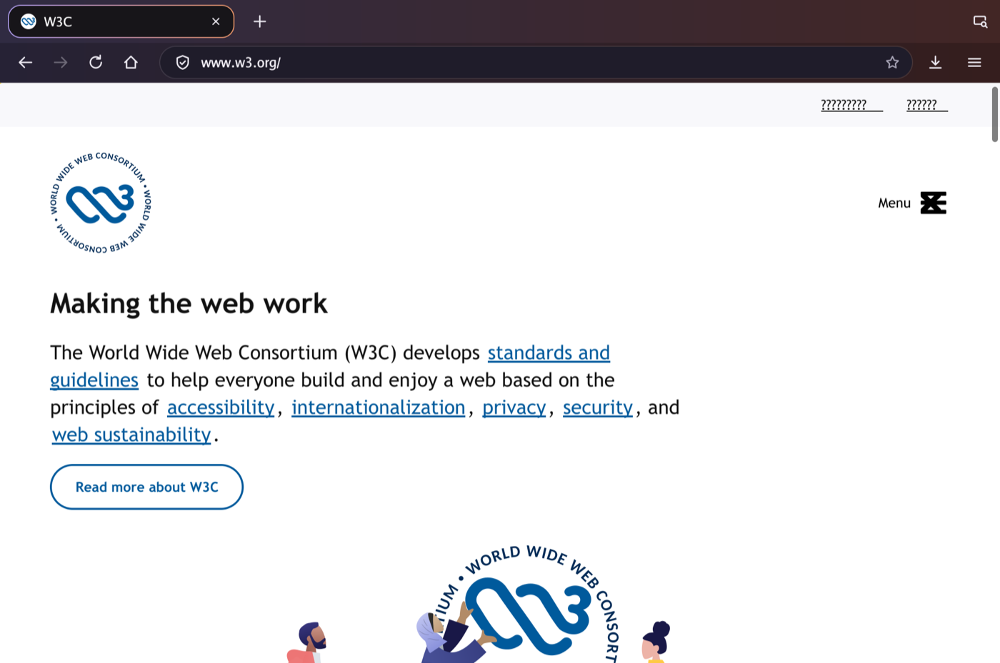
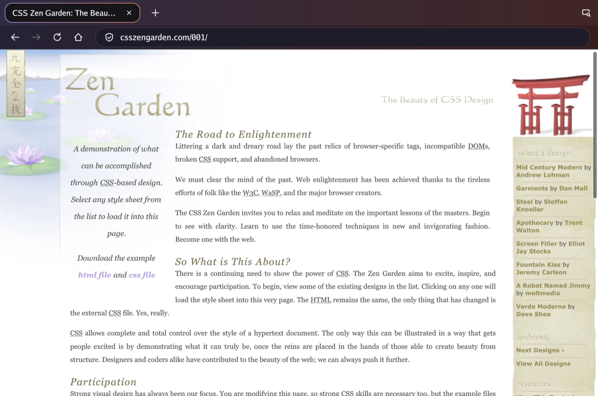
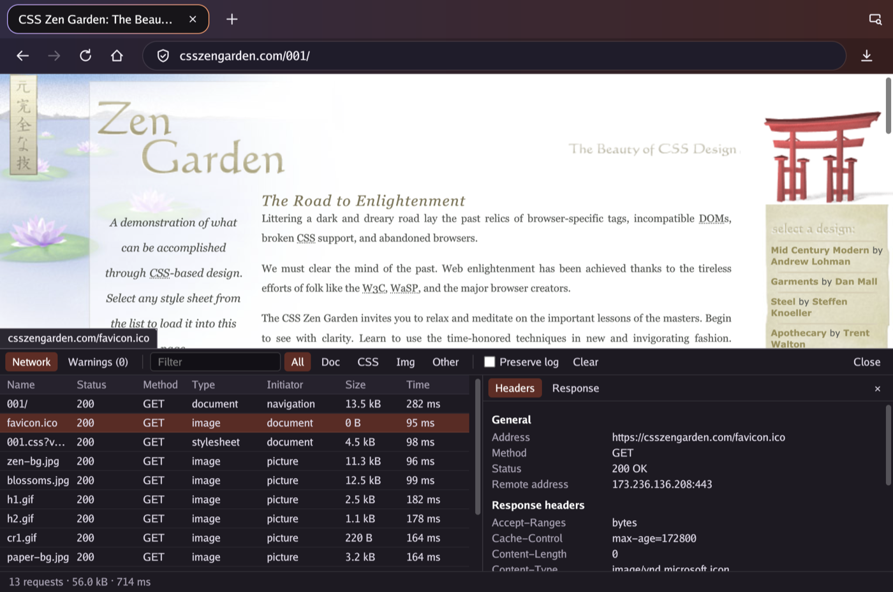

Built from scratch, not from Chromium, WebKit, Gecko, Blink or Electron.
light is a small web browser in Go. No WebKit, no Chromium, no Gecko, no system web view: it parses, lays out and paints every page with its own code.
Free and open source, MIT. macOS, Linux and Windows.
A search, Wikipedia, and the model on the device explaining and translating a selection. Played at twice the speed.
Almost every browser is one of three engines.
light is none of them. It parses the CSS, lays out the page, shapes the text and paints it with its own code, on ember, a game engine in Go. It exists to see how far that goes on the real web.
| CSS, layout, text and painting | ours, checked against headless Chrome |
| The DOM and the web APIs a script sees | ours, in Go |
| Cookies, CORS, mixed content, request headers | ours |
| Tabs, windows, history, bookmarks, developer tools | ours, drawn like the page, on the GPU |
| JavaScript | V8 |
| HTML parsing | golang.org/x/net/html |
| Network | Go's standard library |
Real pages, drawn by light.
Not mock-ups: these are light's own captures of the live sites, scripts and all. Plenty of other sites still come out wrong; these are some that come out right.






Small, and yours.
A browser around the page, with nothing phoning home.
Nothing leaves while you type
No suggestions from a server, no page fetched ahead. A search leaves on Enter, to the engine you chose.
No telemetry
No usage statistics, no crash reports, no update check. Third-party cookies are blocked, and a page of the Internet cannot reach your local network.
It says who it is
An honest User-Agent that names no other browser. Some sites answer it with less. So be it.
A model that stays home
Turn it on and a small language model runs on your device: ask a question of the page, translate it, explain a selection, find by meaning. Nothing of a page leaves the machine.
Developer tools
Inspector, Network with HAR export, Console, Warnings, Storage. And WebDriver, for a test runner to drive it.
It follows your system
Dark mode and languages, each of which the settings override. Click the logo at the top to turn the light off and on again: light's start page does the same.
What does not work yet.
Plenty. Many pages show well, many do not. We would rather tell you here.
That is the subset light runs, not all of the web-platform-tests: the whole of dom/ and
domxpath/ but the tests needing what light lacks, and a few of html,
css, url and domparsing.
Per
directory, and how to run it.
- No JavaScript on Windows
- No canvas, audio or video
- No workers, WebSockets or service workers
- No shadow DOM or custom elements
- CSS is a subset
- No HTTP cache, no file upload, no HTTP sign-in
- No Content Security Policy
- No extensions, sync, private window or password manager
- One process: V8 isolates are the only wall between sites
- Not notarized, no installer, no automatic update
The full, honest list is in the reference.
Try the preview.
Remember what it is: a preview to look at, not a browser to live in. No secrets in it.
macOS
13 or later, Apple silicon or Intel. Not notarized: the first launch needs Open Anyway in System Settings → Privacy & Security.
v__VERSION__, published __DATE__. Every file and the release notes are on GitHub. Checksums are signed with cosign and each archive has its SBOM. Or build it: from source.